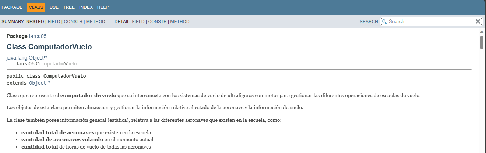

Computador vuelo
2.- Información de interés
Recursos necesarios y recomendaciones

- Se proporciona un paquete base sobre el que debes trabajar: compuVuelo . En él tendrás incluidos los programas de prueba (cada uno con su método
main), así como un conjunto de utilidades para la prueba y el esqueleto de tu claseComputadorVuelo. Es obligatorio utilizar este paquete y sus programas de pruebas. La mayoría de estos programas de prueba aparecerán con errores de compilación, pues están intentando utilizar métodos y atributos de la claseComputadorVueloque aún no has implementado. Conforme vayas desarrollando tu claseComputadorVuelo, esos errores deberán ir desapareciendo. - Es fundamental evitar la redundancia de código (y de ese modo minimizar las posibles inconsistencias), siempre que sea posible, en aquellos fragmentos de código que realicen acciones similares, especialmente en los constructores y métodos sobrecargados. En esos casos debes aprovechar la llamada desde un método a otro si tienes que ejecutar una misma acción (comprobaciones, inicializaciones, actualizaciones, etc.) para evitar tener que escribir el mismo código más de una vez (redundancia). Una de las ventajas de la programación orientada a objetos es precisamente esa.
- Las excepciones que hay que lanzar desde algunos métodos o constructores de la clase
ComputadorVueloy que se capturan desde el programa principal sonIllegalArgumentExceptioneIllegalStateException. Dependiendo del método y de la circunstancia que se produzca algunos puede que lancen una de ellas o las dos. ¡No lo olvides! - Se pide utilizar el método estático
String.format()para implementar internamente el métodotoString(). La idea es que, en lugar de concatenar una cadena tras otras para obtener el resultado final, se realice la creación y formateo completo de la cadena de salida de un solo golpe mediante el uso de este método. - Aquí tienes una captura de pantalla que muestra cómo debería quedar la documentación Javadoc:

Documentación Javadoc (Dominio público)
Indicaciones de entrega
Una vez realizada la tarea, el envío se realizará a través de la plataforma. Renombra el proyecto NetBeans (y la carpeta que lo contiene) siguiendo las siguientes pautas:
Apellido1_Apellido2_Nombre_PROG_Tarea05
A continuación, comprime la carpeta del proyecto NetBeans en un fichero .zip y súbelo en el área de entrega de la tarea también con ese nombre.